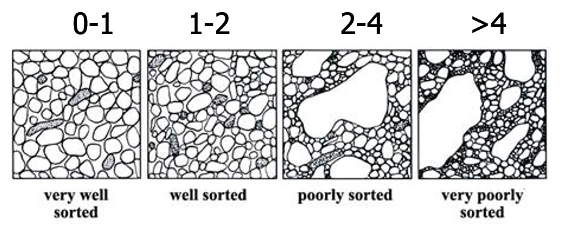
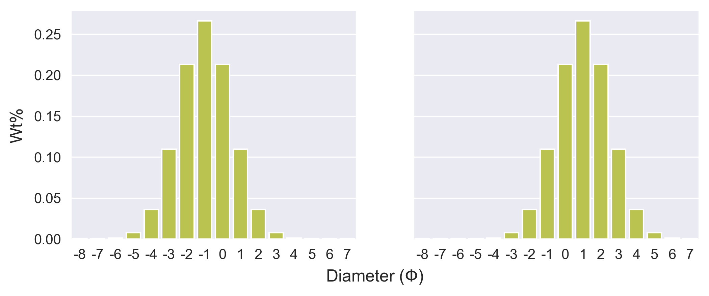
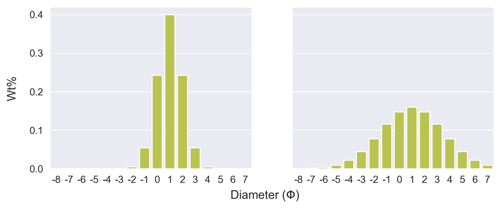
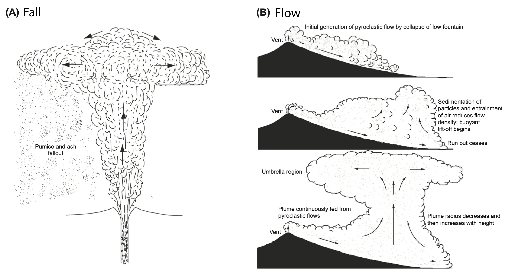
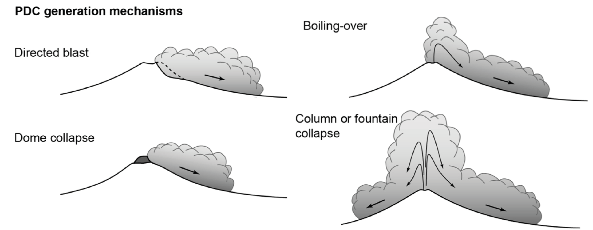

The story of a pyroclast
Under work!
This online textbook is under work - this is just currently a stub!
Pyroclastic deposits result from the sedimentation of pyroclasts through the atmosphere plume during an explosive eruption. Pyroclast - from Greek pyros (fire) and clastic (broken) represent fragmentary material ejected during a volcanic eruption.
The objective of this module explore the journey of a pyroclast from the magma chamber to its sedimentation on the ground and, through this, review the range of processes that generate tephra deposits. In another module, we will then learn what we can learn from these deposits.
Objectives
The objective of this lessons are to understand:
- How tephra is generated, transported and deposited on the ground
- The nature of the physical processes taking place along this journey
- How tephra fall deposits are formed
General concepts
Pyroclast and tephra
Pyroclast and tephra are more or less synonyms, but tephra is more frequently used in the scientific literature.
Why are tephra deposits important?
Tephra deposits are a direct reflection of the eruptive conditions occurring in the plume (Figure 1). By studying, mapping and characterizing these deposits, we can reconstruct the dynamics of eruption and estimate important eruption source parameters (ESP). Following the general idea that "the past is the key to the future", this ability is critical to reconstruct the eruptive history of volcanic systems from their stratigraphic record and, in turn, constrain their potential future activity.

Below are some examples of tephra deposits.

What is tephra?
Pyroclast and tephra more or less describe the same thing. Tephra was first defined by Sigurður Þórarinsson1 following the 1947 eruption of Hekla volcano in Iceland as:
Definition
The fragmental material produced by a volcanic eruption regardless of composition, fragment size, or emplacement mechanism.
Tephra particles are typically described in terms of their componentry and size.
Componentry
Tephra fragments - or pyroclasts - can be classified in two main families depending on their origins:
- Juvenile clasts, which consider all clasts originating from fresh magma (e.g., pumice, ash)
- Lithic clasts, which represent dense clasts generally sourcing in country rocks.
Grain size
Individual tephra particles are also subdivided in term of their size:
| bombs / blocks | lapilli | coarse ash | fine ash | |
|---|---|---|---|---|
| Diameter | > 64 mm | (64 mm–2 mm) | ( >2 mm–63μm) | <63μm |
| **Residence time ** | ≈ sec | ≈ min | ≈ hours to few days | several days |
| Travel distance | proximal <10km | medial <50 km | distal <100 km | very distal <1000 km |
Following a sedimentology approach, particles size is generally described in \(\Phi\) units:

Grain size distribution
Rather than the size of individual particles, what interests us most is the size distribution within an outcrop. Grain size distributions summarise the percentage of weight represented by the particles in each \(\Phi\) bin. We mostly describe two parameters234:
-
Median or \(Md \Phi\): The 50th percentile (\(\Phi 50\)) of the distribution
- → Small (even negative) \(Md \Phi\) values describe coarse deposits
- → Large \(Md \Phi\) values describe fine deposits
-
Sorting or \(\sigma \Phi\): The graphical standard deviation (\((\Phi 84 - \Phi 16)/2\))
- → Small \(\sigma \Phi\) values describe well-sorted deposits
- → Large \(\sigma \Phi\) values describe poorly-sorted deposits

Which is the finest GSD?

Solution
→ The left distribution has a \(Md \Phi\) of -1 (i.e., 2 mm) and is therefore coarser than the right distribution (\(Md \Phi\) of 1, or 0.5 mm).
Which is the better-sorted GSD?

Solution
→ The left distribution has a \(\sigma \Phi\) of 1 and is therefore well-sorted. The right distribution (\(\sigma \Phi\) of 1) is poorly-sorted. Note that both distributions have the same \(Md \Phi\).
How are tephra deposits emplaced?
Look at the following two pictures and formulate hypotheses about emplacement dynamics:
Hint
Is emplacement horizontal or vertical?
Solution (?)
Well, maybe a bit of both...
We can consider two main mechanisms of emplacement:
- If the plume is buoyant, it will rise and become wind-advected, carrying tephra that will then sediment vertically, producing fall deposits.
- If, for any reason, the plume is not (or not anymore) buoyant (→ bulk density exceeds that of the ambient atmosphere), pyroclastic density currents (or PDC) will spread laterally, producing flow deposits. PDC are complex mixtures of hot gases and particles that can be generated in several ways giving rise to several facies, the end-members of which being surges and flows.

Schematic representation of fall (left) and flow (right) emplacement mechanisms (Source: Carey and Bursik 20155). In the left case, the plume is sufficiently buoyant to extend upwards. In the right case, this buoyant state is not initially reached, and a lateral momentum develops to produce directed flows. Note that in some cases, PDC can re-entrain air and become buoyant after some runoff (bottom right), giving rise to co-PDC plumes.

PDC can be generated from a wide range of eruptions varying many scales, from small events (e.g., dome collapse) to large caldera-forming eruptions, which can produce welded deposits (i.e.; ignimbrites) (Source: Dufek et al. 20156).
Lahars
We are starting to make a distinction between vertical (→ fall) and lateral (→ flow) emplacement mechanisms. There is however another flow emplacement mechanism: Lahar
Block-and-ash flow
Small volume pyroclastic density current deposit composed of mostly dense to moderately vesicular juvenile blocks in medium to coarse ash matrix. Mostly generated during collapse of lava domes.
References
-
Thorarinsson, S., 1954. The eruption of Hekla, 1947-48, 3, The tephra-fall from Hekla, March 29th, 1947. Visindafélag ĺslendinga 1:3. ↩
-
Inman, D.L., 1952. Measures for describing the size distribution of sediments. Journal of Sedimentary Research 22, 125–145. ↩
-
Walker, G., 1971. Grain-Size Characteristics of Pyroclastic Deposits. The Journal of Geology 79, 696–714. ↩
-
White, J.D.L., Houghton, B.F., 2006. Primary volcaniclastic rocks. Geology 34, 677–680. https://doi.org/10.1130/G22346.1 ↩
-
Carey, S., Bursik, M., 2015. Volcanic Plumes, in: Sigurdsson, H., Houghton, B.F., McNutt, S., Rymer, H., Stix, J. (Eds.), The Encyclopedia of Volcanoes. Academic Press, pp. 571–585. https://doi.org/10.1016/B978-0-12-385938-9.00032-8 ↩
-
Dufek, J., Esposti Ongaro, T., Roche, O., 2015. Pyroclastic Density Currents. in: Sigurdsson, H., Houghton, B.F., McNutt, S., Rymer, H., Stix, J. (Eds.), The Encyclopedia of Volcanoes. Academic Press, pp. 617–629. https://doi.org/10.1016/B978-0-12-385938-9.00035-3 ↩